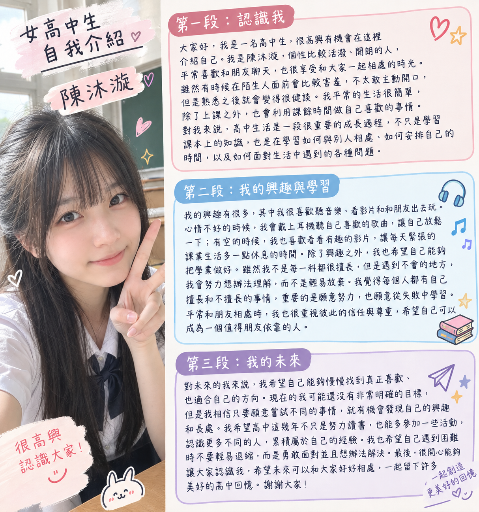

大家好，我是一名高中生，很高興有機會在這裡介紹自己。我是一個個性比較活潑、開朗的人，平常喜歡和朋友聊天，也很享受和大家一起相處的時光。雖然有時候在陌生人面前會比較害羞，不太敢主動開口，但是熟悉之後就會變得很健談。我平常的生活很簡單，除了上課之外，也會利用課餘時間做自己喜歡的事情。對我來說，高中生活是一段很重要的成長過程，不只是學習課本上的知識，也是在學習如何與別人相處、如何安排自己的時間，以及如何面對生活中遇到的各種問題。
我的興趣有很多，其中我很喜歡聽音樂、看影片和和朋友出去玩。心情不好的時候，我會戴上耳機聽自己喜歡的歌曲，讓自己放鬆一下；有空的時候，我也喜歡看看有趣的影片，讓每天緊張的課業生活多一點休息的時間。除了興趣之外，我也希望自己能夠把學業做好。雖然我不是每一科都很擅長，但是遇到不會的地方，我會努力想辦法理解，而不是輕易放棄。我覺得每個人都有自己擅長和不擅長的事情，重要的是願意努力，也願意從失敗中學習。平常和朋友相處時，我也很重視彼此的信任與尊重，希望自己可以成為一個值得朋友依靠的人。
對未來的我來說，我希望自己能夠慢慢找到真正喜歡、也適合自己的方向。現在的我可能還沒有非常明確的目標，但是我相信只要願意嘗試不同的事情，就有機會發現自己的興趣和長處。我希望高中這幾年不只是努力讀書，也能多參加一些活動，認識更多不同的人，累積屬於自己的經驗。我也希望自己遇到困難時不要輕易退縮，而是勇敢面對並且想辦法解決。最後，很開心能夠讓大家認識我，希望未來可以和大家好好相處，一起留下許多美好的高中回憶。謝謝大家！
